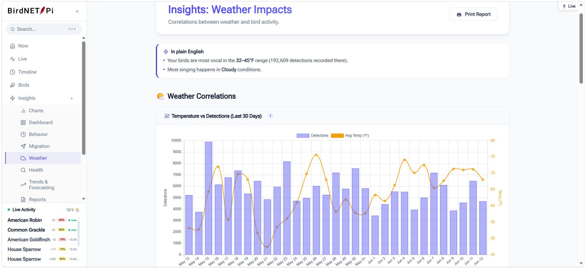

Weather
Weather integration in BirdNET-Pi Enhanced
Bird activity tracks weather closely — birds sing earlier on warm mornings, go quiet in rain, and behave differently under pressure changes. The Enhanced Version records hourly weather alongside your detections so those relationships become visible instead of anecdotal.
Setup: one setting, no plugin, no API key
There is no weather plugin to install and no account to create. Weather comes from Open-Meteo, which is free and keyless. The only thing it needs from you is where your station is:
- In your BirdNET-Pi web interface, open Settings in the sidebar, then the Settings button on the page that opens.
- Under Location & Weather, set your latitude and longitude.
- Save.
That's the whole setup. Syncing starts automatically and runs hourly from then on. When it runs it also backfills up to seven days of history, so a station that's been offline catches up rather than leaving permanent gaps.
Your coordinates do more than weather — species range filtering and the rarity detection that powers "unusual for your area" both depend on them. If you set nothing else after installing, set these.
Where weather shows up
Once it's syncing, weather appears throughout the interface rather than on one page:
- Today's species — temperature and conditions along the bottom axis of each species' hourly chart
- Timeline day replay — a weather strip across the top of the day
- The hero card — current conditions beside the most recent detection
- Weather Insights — a dedicated analysis page correlating conditions with activity
What the analysis tells you
The Weather Insights page groups your detections by temperature bracket and by condition, then states what it finds in plain English — which temperature range your station is busiest in, which species are most and least deterred by rain, how much activity drops in wind. Brackets with no detections show a real zero rather than an ambiguous "N/A", so you can tell the difference between "no birds" and "no data."

These read against your station's own baseline, not a general expectation, so they become more meaningful the longer you run. A few weeks of data is enough for the temperature brackets to say something real.
Units
Set Celsius or Fahrenheit and your preferred wind speed unit under Settings → Settings → Display & Units. Weather is always stored in one canonical format internally and converted only for display, so switching units never rewrites or corrupts your history — and Celsius brackets are true 5°C bins rather than converted Fahrenheit ones.
Using your own temperature sensor
Forecast data is regional; your garden isn't. If you run Home Assistant with a local temperature sensor, you can point BirdNET-Pi Enhanced at that entity and it will use your actual reading for the current hour instead of the forecast value.
Configure the Home Assistant URL, a long-lived access token, and the temperature entity ID in Settings. If the sensor goes stale or Home Assistant becomes unreachable, the station falls back to Open-Meteo automatically rather than freezing on a stale reading. The Station Doctor page includes a live check so you can confirm the connection works.
Troubleshooting weather
My weather data is empty or missing
Almost always this means latitude and longitude are still 0.000. Set real
coordinates under Settings → Settings → Location & Weather, then
trigger a manual sync from Settings → Station Doctor. If it still fails,
check that the Pi has outbound internet access.
There's a gap in my weather history
Sync backfills up to seven days, so short outages heal themselves on the next run. Gaps longer than a week stay permanent — the backfill window doesn't reach further back.
The temperature doesn't match my thermometer
Open-Meteo gives you regional forecast data for your coordinates, which can differ from a reading in your own garden by several degrees. Connect a Home Assistant sensor as described above if you want your actual local temperature recorded instead.
Do I need to install a weather plugin?
No. There is no weather plugin. Older documentation elsewhere referred to one that doesn't exist — weather is built in and needs only your coordinates.